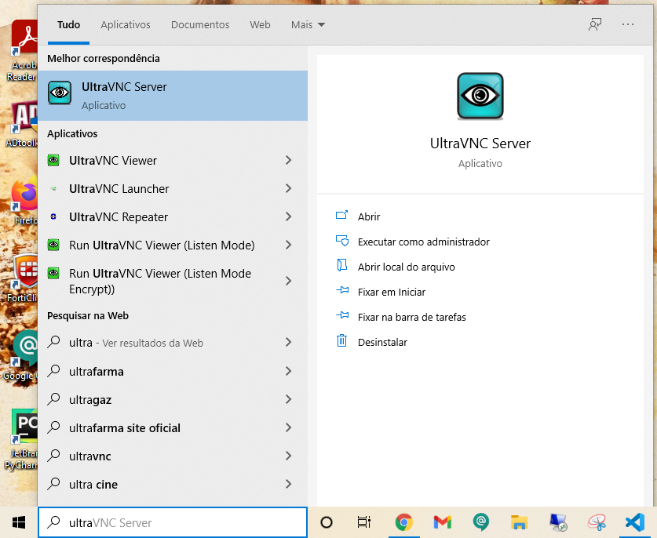
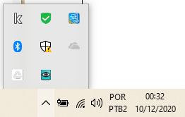
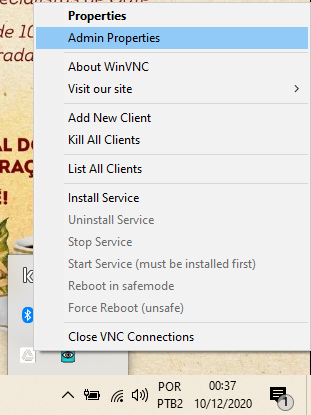
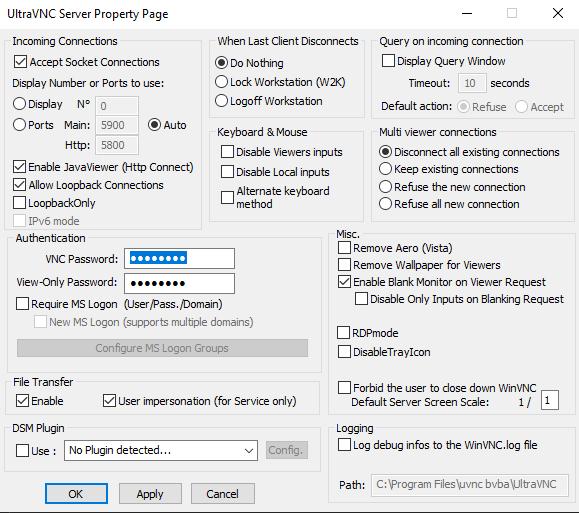

1. Digite ultra na barra de pesquisa do Windows
2. No menu da barra de tarefas do Windows aparecerá o ícone do Ultra VNC
3. Clique com o botão direito em cima do ícone do Ultra VNC e clique na opção Admin Properties
4. Nos dois campos de senha defina a senha para 123456 . Clique em Ok e Ok novamente.
